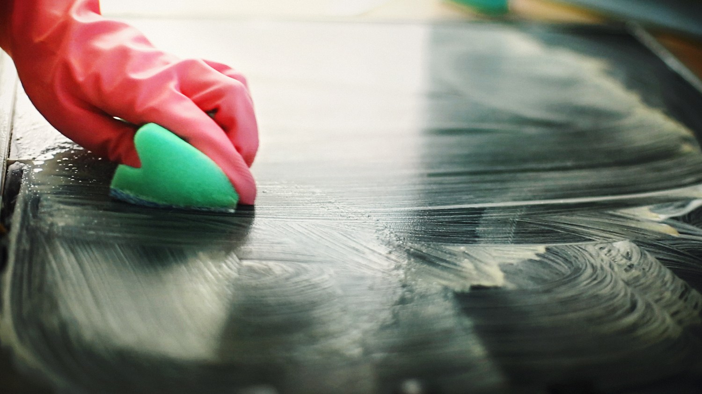

Introduction:
Cleaners and degreasers are essential products used in various industries for cleaning and maintaining equipment and surfaces. However, their production, use, and disposal can have significant environmental and social impacts. Sustainable development aims to address these impacts by promoting sustainable practices in the production and use of cleaners and degreasers.
Sustainable practices in the pharmaceutical industry:
Green chemistry: Green chemistry principles can help to reduce the environmental impact of cleaner and degreaser production by minimizing the use of hazardous chemicals and reducing waste.
Sustainable packaging: Implementing sustainable packaging practices can help to reduce the environmental impact of cleaners and degreasers by reducing waste and promoting recycling.
Low toxicity and biodegradability: Using low toxicity and biodegradable cleaners and degreasers can help to reduce the environmental impact of these products.
Efficient use: Using cleaners and degreasers in an efficient and targeted manner can reduce waste and the need for excessive use of these products.
Extended producer responsibility: Implementing extended producer responsibility programs can help to reduce the environmental impact of cleaners and degreasers disposal by requiring manufacturers to take responsibility for the end-of-life management of their products.
Benefits of sustainable practices in the production and use of cleaners and degreasers:
Environmental protection: Sustainable practices in the production and use of cleaners and degreasers can help to reduce the environmental impact of these products.
Social progress: Sustainable practices in the production and use of cleaners and degreasers can promote social progress by improving the health and well-being of workers and local communities.
Economic growth: Sustainable practices in the production and use of cleaners and degreasers can create new industries and jobs in sustainable practices, leading to economic growth and job creation.
Public health: Sustainable practices in the production and use of cleaners and degreasers can help to promote public health by reducing the environmental and social impacts of these products.
Conclusion:
Sustainable development aims to address the environmental and social impacts of cleaners and degreasers production, use, and disposal. Key strategies for achieving sustainability in the production and use of cleaners and degreasers include green chemistry, sustainable packaging, low toxicity and biodegradability, efficient use, and implementing extended producer responsibility programs. Achieving sustainability in the production and use of cleaners and degreasers has several benefits, including environmental protection, social progress, economic growth, and improved public health.